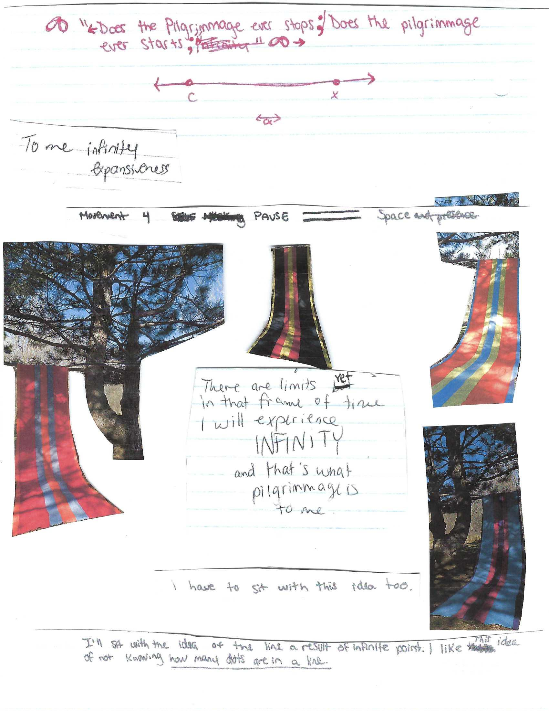
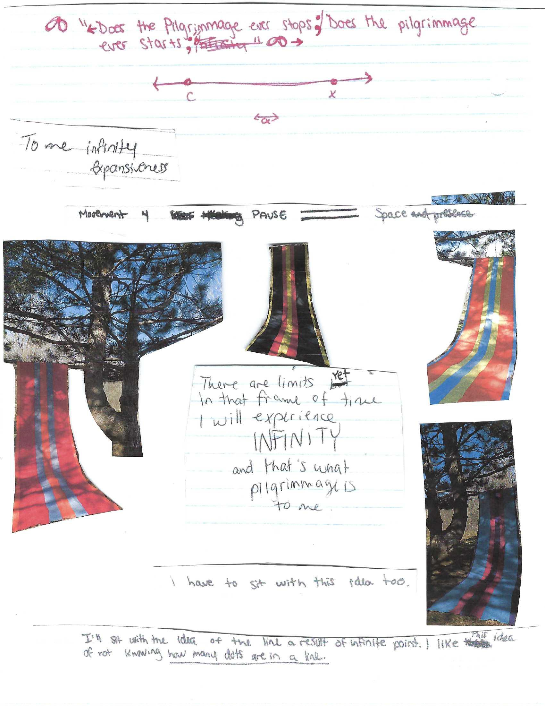
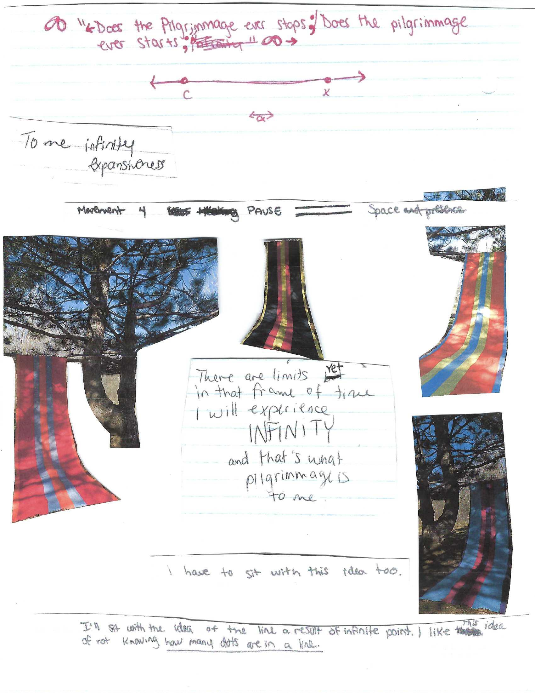
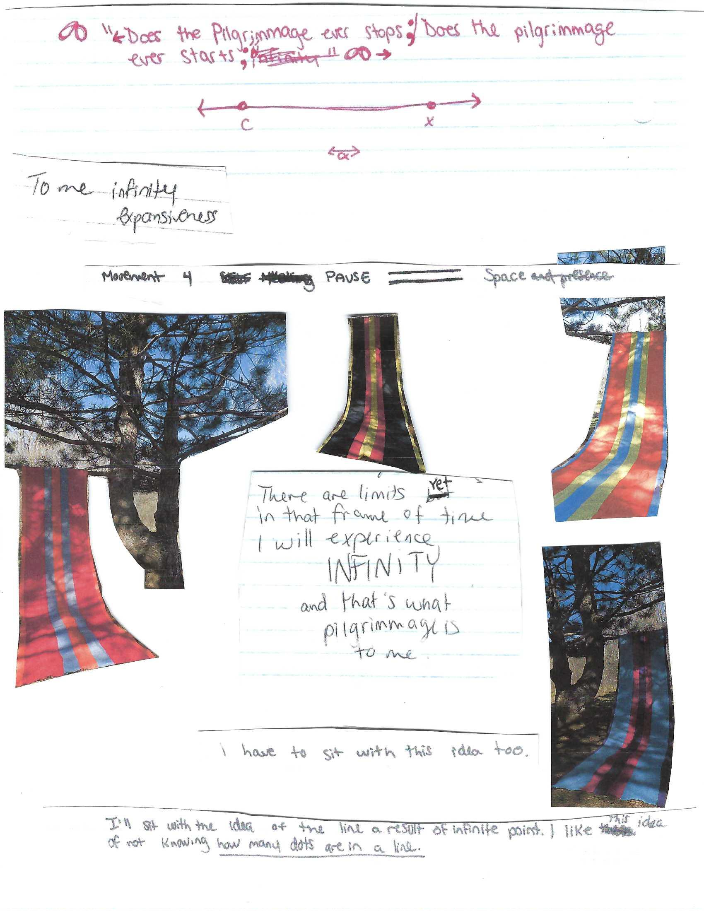

 

Miss Expanding Universe aka Ashley Yang-Thompson aka Trashley is the author of the underground self-help cult-classic How to be the worst laziest fattest most incontinent piece-of-shit in the world EVER, published by Bateau Press. She is the co-mastermind of WORM SLUT, a Portland-based weekly zine that celebrates mesh crop tops, the Right To Be Lazy, burritos, spending beyond your means and the metonymy of sucking.
How do you stay in your skin? Butoh hands claw their way out of Russian Doll-like figures growing out of each other.
Tally marks count the days in a literal prison or the prison of one's mind. Sticky notes keep tabs on runaway thoughts.
Windows serve as tiny portals into a traumatic past that refuses to die in the living mind.
Interview:
ET: What are you reading right now
Ash: I’ve been obsessively reading Jonathan Franzen’s oeuvre in the past month… The Corrections, Freedom (crying in the coffee shop), Purity, and now Crossroads. Also Julia Kristeva’s Powers of Horror.
ET: Has a work of art ever changed you or been pivotal to your life or saved you
I experienced Stendhal Syndrome -- a psychosomatic condition involving rapid heartbeat, confusion and even hallucinations, allegedly occurring when individuals become exposed to artworks or phenomena of great beauty and antiquity -- firsthand when I entered Pippilotti Rist’s Pixel Forest exhibition at the New Museum. I felt as though I had recaptured my child’s eye, the anti-inflammatory sense of wonder that allows for things to be something other than what they appear to be…
ET: What's your love life like
Ash: I’m obsessed with colleague who has a partner, I sat on a married man’s face who was old enough to be grandfather every afternoon last summer, I have millennial voicenote sex with a poet across the country, I’m attracted to balding men because I never knew my father, I’m a serial seduce & destroyer, and I’m a closeted lesbian. These are all half truths.
ET: What is your favorite food
Ash: Burritos & meat sticks, but mostly I stick to my “health mounds,” which is also my favorite word for cunt.
ET: What do you think of the word "work"
work is necessary. Someone has to do it. If no one was working, no one would be manufacturing toilets, and I’d have to poop out the window.
That being said, the dancer Susan Rethorst wrote in the remarkable essay “Play Profound” that rigor is doing whatever it takes to play profound, which rings psychic cherries of felt truth.
ET: Are you burnt out ever
Ash: Yes.
ET: How do you cope with burnout
Ash: I drink a bunch of magnesium water and shit until I feel empty inside.
ET: What is your go to karaoke song
Ash: Phantom of the Opera
Zoe Dedes (Montreal-born & based) is an artist, educator and holistic practitioner. Currently completing a BFA in Art Education at Concordia University with a Minor in Psychology. Working towards a Masters in Creative Arts Therapies. Zoe makes ceramics, paintings and photography that examine how nature, intuition and connection are negotiated through sensorial/perceptual phenomenon/phenomena? Her influences are eclectic and rooted in her multicultural upbringing and community. Favorite hobby: Gardening. She believes in community development through the arts.
Zoe’s painting SECRETGARDEN has been exhibited at the VAV Gallery Montreal, Canada (2022) and was published in print for the InArte Journal (2022). Keep up with her social media for local Paint Nights, art and plant content.
Interview:
ET: what are you reading right now
The Doors of Perception by Aldous Huxley
The Body Keeps Score by Bessel Van der Kolk
ET: Has a work of art ever changed you or been pivotal to your life or saved you
Art has made a steady impact on my life and path. I have learned a lot about myself and my body through art. Music has been one way I regulate emotions. Rhythms, hobbies and creative routines can be influential. But my love for art and history are also related. Mantra Map is inspired by a painting of a garden in the Deccan Plateau in India from the late 17th century.
ET: do you believe that art can save lives
I believe art has the ability to make people feel good. There is power in creative methods of expression. Art induces creative focus and letting go, having a similar effect to your body as meditation. Art can be a distraction – it also creates the space for learning, listening and understanding in special and individualized ways.
ET: how do you approach your art
Artists are forever students.
Right now, there is always room for improvement. In this way, art has allowed me to let go
ET: whats your love life like
Karmic
ET: do you think trauma is an overused word
Depends on the context. There is a lot of power in our words and our self-talk. Our interpretations have a direct impact on our emotional processing and growth. It is crucial to be kind to yourself, but also realistic about what you’ve experienced in order for proper healing to occur.
ET: do you keep a journal or diary
I keep a journal and a sketchbook. I find the practice of writing useful for checking in on yourself, for releasing, and for planning. My sketchbooks feature handwritten research notes and poetry, as a way to track my inspirations. 💅
ET: how has your art changed, how have you changed, has the pandemic changed you and your approach to art
For me, art is a process of exchange, practice and development. In my personal practice, I am guided by my interests, hobbies and moods. As an art educator, I am always looking for new and old concepts and practices to share. I also learn a lot through and from my students.
ET: do you believe that solitude is necessary for an art practice
As an introvert, my art practices require solitude and focus.
ET: whats the general process of making a piece for you
Sketch - Colour Palettes - Begin Execution – Never Finish a piece
ET: what is your daily routine approx.
Priorities are drink water, brush teeth, coconut oil pulling. Maintaining an organized agenda. Cat cuddling.
ET: do you have a routine
Adulthood is 15% vaccuming.
I have 25 + houseplants keeping me company in my apartment. Part of my routine includes watering and maintaining relationships with them through conversation.
ET: do you have a uniform that you work in
I wear overalls when I teach art.
ET: what do you do when you’re not creating art,
I recently completed a Bachelors in Art Education and am working towards applying for a Masters in Creative Arts Therapy. Outside of school, I host Paint & Sips and facilitate paint parties of all sorts. Its a dream job! I spend a lot of time gardening, watching things grow and learning about herbalism.
ET: what do you collect
Sea shells, Plants, Books, Magnets
ET: what are you fringe interests, what would you study or be an expert if you had the time
I used to Major in Anthropology. Back then, I hoped to travel, dig for treasures and uncover weird alien fossil critters.
This alternate universe ties into my interest in Art History and how we can understand human evolution and psychology through art and artifact.
I am also deeply interested in psychedelic therapy and its potential combination with art therapy. Passionate about all things herbal medicine, microdose and alchemizing elements for natural wellness.
ET: what would another life look like for you
Tropical Forest - Sun - Beach – Juice Bar & Art Cafe – Family & Pets
ET: what is your favorite way to communicate ex: words, images, movement
Telepathically
ET: what is your favorite form of language
Passing Notes in Class
ET: do you make playlists, what's on your recent one if so
I make playlists according to season. For me, sound and time are connected. I organize them this way to keep track of how I may be feeling, overtime. Not effective for organizing music by genre...
Bryce’s work brings an untroubled perspective to the mundane by injecting satire into the daily happenings of life. With exaggerated forms, shapes and endearing grins, Bryce’s work will bring you nothing short of a good time. Guaranteed or your time back.
Interview:
ET: Can you tell me a little bit about your art style and what triggers your imagination?
My style could be described as an oval with three dots and a curved line. It’s hard to say what triggers my imagination. It happens when it happens and sometimes it doesn’t happen. I’ll go through old sketchbooks and think “how in the world did I come up with this?”. In that moment, something clicked and that’s cool.
ET: I notice in your work, your subjects are majority inanimate objects or animals. What is your interest in there or have you always just dreamed of having a conversation with a caterpillar?
I like things that don’t have faces yet and slappin’ a good ol’ smiley on. When I see a caterpillar crawling along a leaf, I know, deep down, all that caterpillar wants is to smile and tell me, “life is good”.
ET: Was this your first time working with 3D objects? If so, how was it and could you give a little insight to your process?
It was my first time completing something substantial in 3D. I tried making a donut once. The process was led entirely by YouTube tutorials with a little hint of my own direction. Learning any new software is a nightmare at first.
ET: What is the relationship with your work and to the theme of pilgrimage.
I guess my pilgrimage would be my move to Montreal. A search for something more, something greater. As far as the work, the ghost seems to have become enlightened as they now carry a star of achievement. Like you would from your teacher after getting a B+ on the test.
ET: Do you have any major inspirations? Can be within the art realm, could be books, movies, music, the world is your oyster!
Airplane safety cards you read before flight, that pesky squirrel that lives under my balcony, dry humour, those sun bleached posters you see in shop’s windows.
ET: When is the last time you lost track of time
I had to check the time when I woke up this morning.
Hello ⚘
This past autumn, my blossoming interest in hardware was pollinated by an unexpected gift, a Macintosh Plus computer from the late 1980s. The computer came into my possession through an act of urban gleaning. It seemed fitting that the computer's next life be powered by a gleaned source as well. In December 2021, I powered the Macintosh plus with one gigantic 'apple battery'. Over 50 rotting apples were connected with pennies, nails and wire in a series circuit. An apple-powered, Apple computer ran MacPaint. To house my power source, I built a cabinet out of used-sweet-corn crates that held the apples (forming the battery), as well as the apples that could no longer supply power (that were immortalized as apple dolls). As a gift for helping run the next iteration of the apple, you will get to carve an apple doll that once dried will be further immortalized as a 3D scan. You may keep the scan but I will take the apple doll as a souvenir for my travel.
Send an email to me here with name and location to add yourself to my apple doll pilgrimage.
My name is Sarah Holloway. I use she/her pronouns. I am from what is now called Oakville, Ontario, Canada, on the traditional lands of the Haudenosaunee, the Anishnabek Nation, the Attawandaron, and the Mississaugas of the Credit. My education began at OCAD University before transferring to the Rhode Island School of Design (RISD) to complete a degree in furniture design.
In times of isolation, I have been keen to lean on my nonhuman relationships, getting to know the plants and ecosystem around me. Over the past few years I have grown twin flame interests in computation and ecology; Hitting the inspect button in a web browsers and on walks around my neighbourhood. With an education in craft, (primarily woodworking,) I am curious how these older ways of knowing impact my primarily self-taught education in computation.
Interview:
ET: How would you describe your relationship with your apple dolls?
Relics of power. Endearing, some of them were made by friends and have a face that takes after them, artistically I mean.
ET: The thing I love about your work is the two forms it can take, the ephemeral physical apple and the scanned apple which can live on basically forever- or until the internet crashes. I’d love to hear you talk about duality and how these two different forms function in your work.
Heir and a spare. No. It has less to do with archival work and more to further a formal exploration of the apple dolls as a subject matter. The apple dolls are kinda hand-held sculptures. They are meant to be touched and are not precious. So 3D scanning, allowing for full 360 manipulations seemed like the best fit. I intended for the project to titer between digital and physical. I saw digitizing the apple dolls as a nice bridge between the analog of digital parts of the project.
ET: What is the relationship with your work and to the theme of pilgrimage.
A pilgrimage to me is a journey of significance and of some distance. Perhaps a transformation of sorts occurs. I’ve anthropomorphized the apple dolls enough to see them as little people who physically and digitally travel to their audience. Their dignification and journey on to the Earthtone website is a travel that has greatly affected them. Secondly, the work is meant to generate a map of sorts of people interested in the project which hypothetically the apples could travel along.
ET: Walk us through a little bit of your process in creating this work?.
I glean most of my materials. What is available then determines a lot of my practice. Fate had it that I was gifted a Macintosh Plus computer from a friend in the fall, during apple season. I had been thinking about comparisons of material yesteryears, or less common objects and systems that could be used as metaphors for teaching myself more complex systems…Like when you are in science class and you do a lot of practice circuits
ET: Is a majority of your practice based digitally? Specifically in 3D scanning or do you have a large studio practice as well?
I have a studio practice as well. I am going to school to study furniture making which provides me with an understanding of fine woodworking and some metalsmithing and textile fabrication. Furniture design is not what I do primarily, though it is fun, the skills I learn are definitely reflected in my sculptural practice. I have only started using 3D scanning software but it has been very fun to play with within CNC fabrication. Currently, I am making a series of CNC’d bark samples in Oak wood.
ET: Do you have any major inspirations? Can be within the art realm, could be books, movies, music, the world is your oyster!
As corny as it sounds, I have recently remembered that I love reading. I have been falling down a rabbit hole of hyper-text which started with a recommendation by a professor of mine, S.A Chavarrã¬a, to read Julio Cortázar’s Hopscotch.
I just started a part-time job that has me looking at Telidon, a pre-internet, Pseudo-internet system in Canada during the ’80s. This is gotten me to research early internet art and computer art from the ‘80’s to contextualize this work more. There is an exhibit going on at Interacess in Toronto in Spring 2023.
Adrian Ocone is a multimedia artist originally from Ojai California. They work between digital mediums, painting, drawing, sound performance, and sculpture. They are interested in collaborative relations, relations with tools, and structures of thinking in art making. They are currently completing a bachelors degree in painting at the Rhode Island School of Design.
Interview:
ET: Can you walk us through your process in creating this work? Thought process, hardwear, ideas, so on..
This work began as an experiment of seeing how much artificial information I could put into Google streetview photospheres before their autofiltering would block it. Admittedly I wasn’t able to get very far with the 3d models I was trying to use so I moved to using the 3JS library as an alternative viewing platform for these images. It also give me the advantage of being able to combine the photosphere environment with an interface of my choosing, in this case superimposing my own hands. This is in continuation of a series of paintings/photocollages I’ve done in reference to first person video games like Elder Scrolls or Quake. I’ve come to associate that high field of view look with mediation from ones environment or dissociation of some kind. I think it is just kind of funny too, especially here using the imagery of Twilight and a freeway overpass above the 95 freeway in Providence, both of which feel monolithic and detached yet also familiar and kind of goofy to me. I don’t think theres any more of a thesis here than in any of my other work, but maybe there is some comparison to be made between pop-culture and large, public works projects. I’m mostly concerned with the aspect of experimentation.
ET: One of the obvious themes in your work is the influence of twilight, so are you team Edward or Jacob? Also is it important for you to have twilight as such a large part of your work?
I guess I have to be team Edward… I’ve only seen the Twilight movies in the past two years, maybe it would be different if I had read the books or seen the movies when they originally came out. I like Jacob, but the way the character is treated in the last movie freaks me out too much, maybe it also has to do with Robert Pattinson being more in the public eye right now. I also just think vampires are awesome. As far as Twilight’s influence on me, I just really appreciate it and I think it’s cool to make something more along the lines of fan art. It’s seems a lot more straightforward and genuine since it’s a pretty direct reaction to another piece of media. Like people having cover bands or something. Theres a lot to pull from when it comes to Twilight, a lot of things that have aged strangely or make it an artifact. I’m definitely going to continue pulling from it.
ET: What is the relationship with your work and to the theme of pilgrimage.
I definitely see everything I make as relational. Making some kind of temporary space for collaboration or communication. In that way I relate it to pilgrimage, there is always effort involved in trying to enter that space, wether it is seamless or incredibly difficult. Think about trying to play music with others and how tenuous that can be, everyone has to find some way to enter that space and move through it together. For me there is not a grounding aspect of art by default, I definitely have to figure it out over again each time. I don’t have much of a particular grounding in space either, I can’t say I’m particularly connected to any of the places I’ve lived in a similar way.
ET: Do you have a routine? If so what does it entitle, if you swagger from it how does it affect your day?
I’d love to have more of a routine. I hate waking up past 10:30am, but my sleep schedule is inconsistent. I definitely think of myself as being fragile or at least easily imbalanced. I need to figure out a way to live…
ET: What do you believe makes a good artist? Or “good” art?
I think I'm most drawn to people who work intuitively/in an improvisational way. I think things like social engagement may be the most important, but an openness to the work definitely benefits the social aspect. People like Dieter Rot, Cecil Taylor, and David Toop are definitely role models for both their openness and the social aspect of the work. Also, I feel ever-attached to the idea of being prolific. I think that’s somewhat attached to being able to work intuitively. Sometimes that comes in the way of course, getting caught up in the details of something or working in ways that don't lend themselves to quantity. It’s all just an effort to enjoy oneself anyways.
ET: Do you have any major inspirations? Can be within the art realm, could be books, movies, music, the world is your oyster!
The aforementioned people are definitely among my absolute favorites. I’m inspired by my friend Yuqing, my parent’s cat, I really like slow tv, Wikimedia, I like working with synthesizers and hardware a lot, it’s hard for me to motivate myself to watch movies, it’s even harder for me to watch tv. I love Mark Fell, Soil Thornton, Kali Malone, Bjork. Also, environmental sound, landscapes. I feel like I’m very easily excited, but also very easily distracted! I’m definitely forgetting something essential.